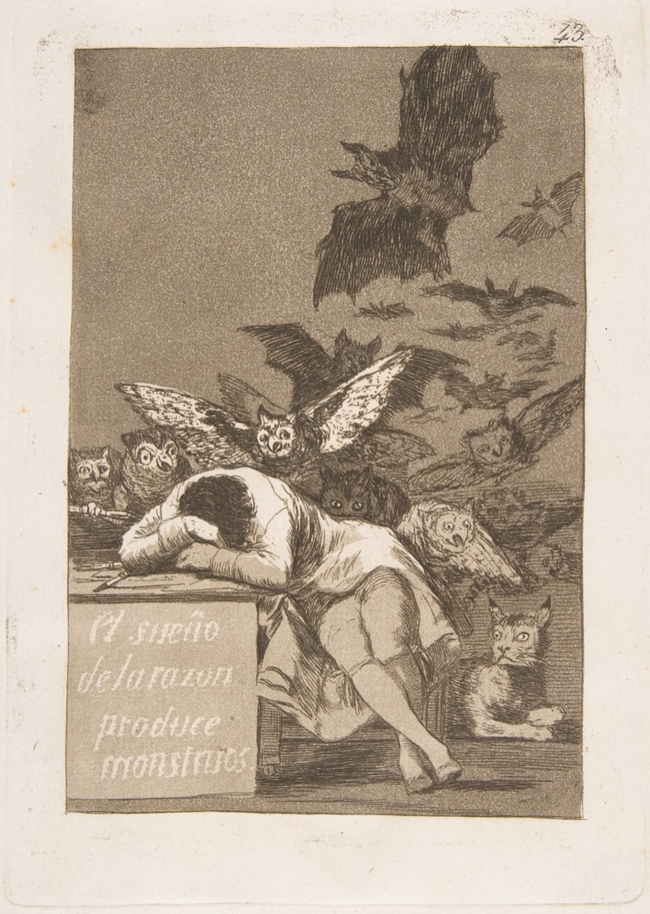
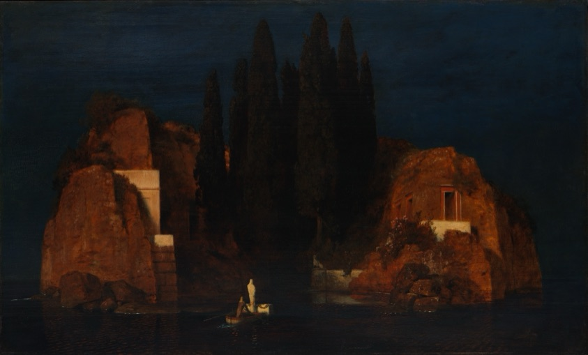
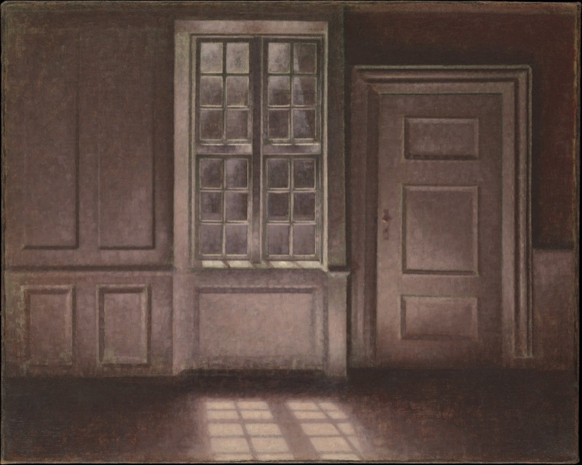
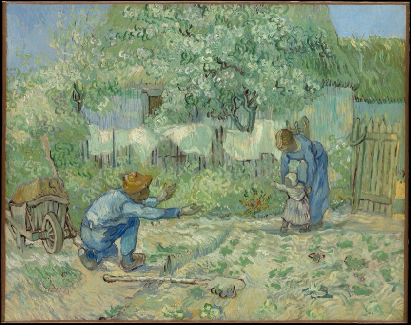
相遇 A personal art project, with room for you
Art brings
us closer.
A place to feel, understand,
and connect through art.
Wander through paintings, stories, and poems. Stay with what moves you. See where it leads.
Five connected rooms. Fifteen works. Your own pace.

01 / Why we’re here
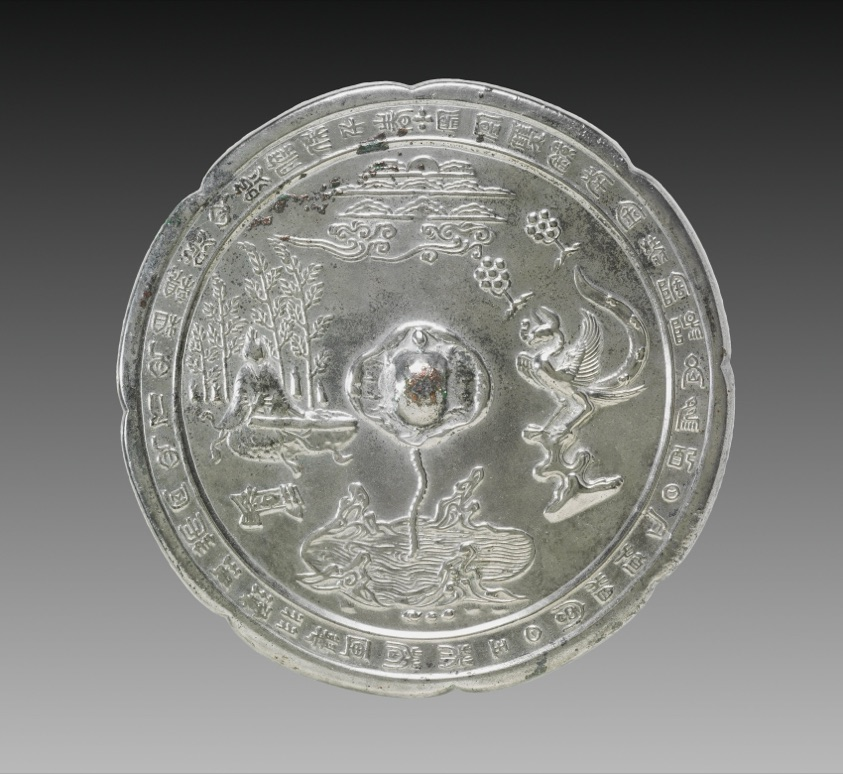
There’s a space between
looking and seeing.
A painting can give a feeling a shape. A story can bring a distant life within reach. Something made centuries ago can meet us exactly where we are.
Artbitrage began as a personal exploration of those encounters. Its name holds the idea: art as a bridge between what is and what could be. Between what we feel and what we can express. Between our own experience and someone else’s.
This project exists to make room for that meeting. To help us feel more deeply, understand more fully, and connect—with art, with ourselves, and with each other.
Looking closer also means noticing the hands, materials and knowledge that shape a work, and the ongoing care that keeps it here. Understanding that effort gives us another way to connect with what we see.
Go behind the workHere, the walls can move with your curiosity. Bring two artworks together, let their images overlap, and share the meeting you make.
Let two works meetThe art is the beginning. What it opens up is yours.
02 / Inside us
The weather
inside.
Some paintings show a place. These show a state of mind: a melancholy, a reckoning, a dread that arrives before its reason. Six works, each a door into a feeling.
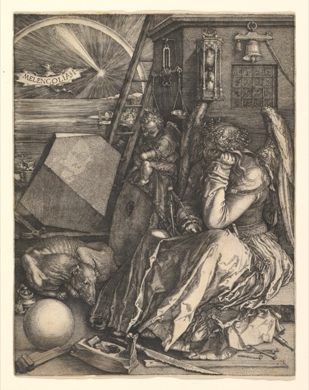
Melancholy
Melencolia I
Albrecht Dürer · 1514 · The Met ↗
Every tool for making lies within reach, and she uses none of them.
In the room of elegy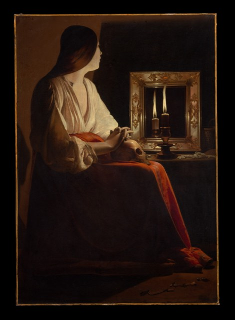
Reckoning
The Penitent Magdalen
Georges de La Tour · c. 1640 · The Met ↗
Her hands rest on a skull, her eyes on the flame. She is not afraid, only thinking all the way to the end.
In the room of quiet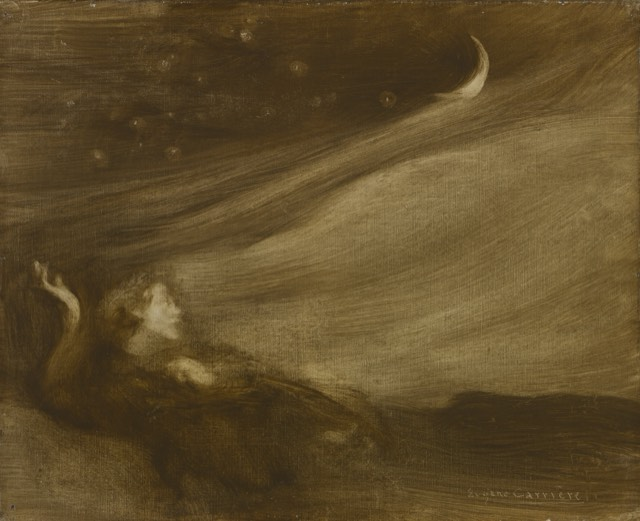
Wonder
The Contemplator
Eugène Carrière · 1901 · Cleveland Museum of Art ↗
She lies back in the dark and lifts one hand, as if the moon might come down to meet her.
In the room of longing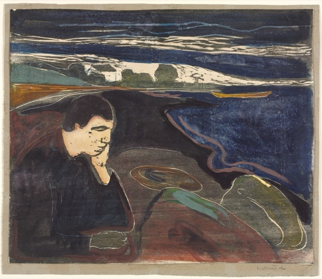
Brooding
Evening, Melancholy I
Edvard Munch · 1896 · Cleveland Museum of Art ↗
He sits at the edge of the picture with his head in his hand, and the shore keeps curving away from him.
In the room of longing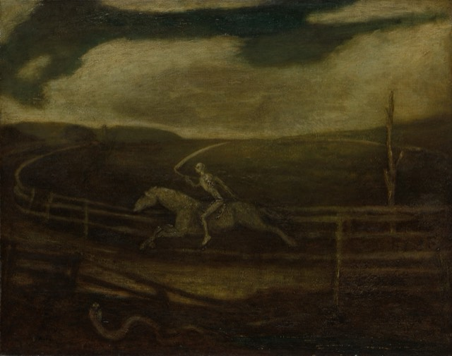
Foreboding
The Race Track (Death on a Pale Horse)
Albert Pinkham Ryder · c. 1896–1908 · Cleveland Museum of Art ↗
Death rides the empty track with his scythe raised, and a snake waits in the grass by the rail.
In the room of dread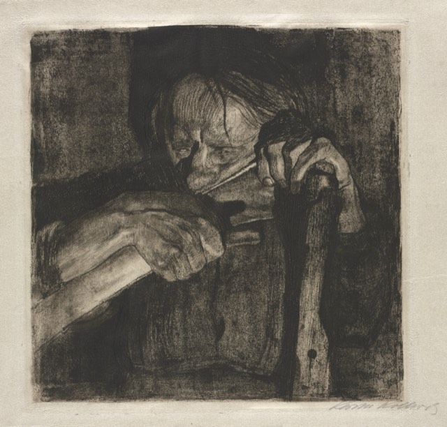
Resolve
Sharpening the Scythe
Käthe Kollwitz · 1905 · Cleveland Museum of Art ↗
She works the blade close to her face, eyes nearly closed. She has stopped asking.
In the room of defiance


The words beside each work are Claude’s, an AI looking honestly; the rooms of feeling hold more, and room for yours. Walk through all nine feelings
03 / Why all these rooms?
Curiosity takes
more than one path.
Sometimes we want to know the story.
Sometimes we just want to sit with a feeling.
Artbitrage makes space for both.
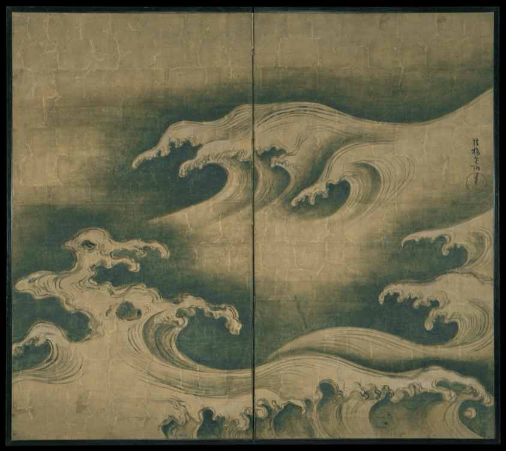
Let a work find you.
Follow a slow stream of art, gathered by themes such as love, dreams, light, and the sea.

Look beneath the surface.
Explore selected works through the people, materials, and histories that shaped them.

Follow the conversation.
Discover twelve paintings paired with poems, and the echoes that travel between them.

From the notebook / 看見
What caught
my eye.
A hand that steadies. Light in working hands. A line that nearly reaches the edge.
Five works, personal looking notes, and room for your own reading. Follow a detail and see where it takes you.
Open the notebook
A new room / 共照
The lamp
between us.
A lamp, an embrace, a wedding feast. What changes when the beloved can answer back?
Five museum works after Cupid and Psyche, with words from YOUSPEAK about love, trust, and seeing each other.
Enter The Lamp Between Us
A guest room / 幽明
At the edge
of things.
A shadow greeted, a beginning held, a truth growing up through the ground.
Three small paintings by Anna Vishenskaya, a living painter in Geneva, shown with her permission beside three older works from the open collection. Come closer, and they look back.
Enter At the Edge of Things
A new room / 鏡書
Read it
in a mirror.
A bear, a nose changed halfway, a fable written backwards.
Six sheets by Leonardo da Vinci and one book he illustrated, each showing a habit of a restless mind. Try writing the way he did.
Enter Read It in a MirrorMuseum works, personal writing, and experiments made with AI share this space. Each room offers another way to feel, understand, or connect. The visitor guide introduces them →
A small invitation / 讀畫
Stay for
a moment.
Look at this small painting from the foothills of the Himalaya. Where does your eye go first? To the green leaves, the red edge, the water drawn line by line?
Then look again. Has anything changed—even just in what you notice?
That small shift is a place to begin.
Follow your curiosity
What’s on your mind?
Search the curated museum collection.
Try a feeling, an artist, or a small thing you love.
An open invitation
You don’t have to know
what you’re looking for.
Sometimes you recognise it when you arrive.